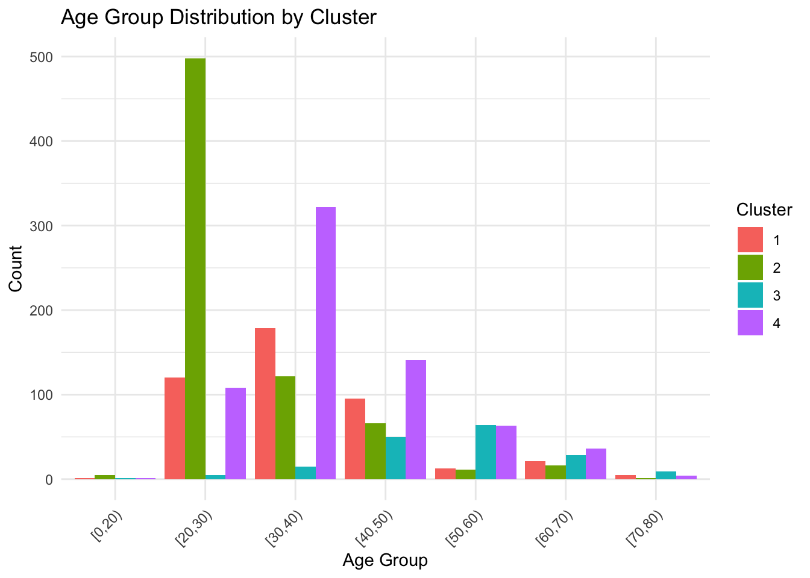
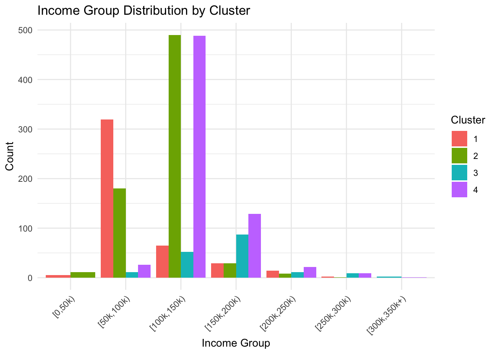
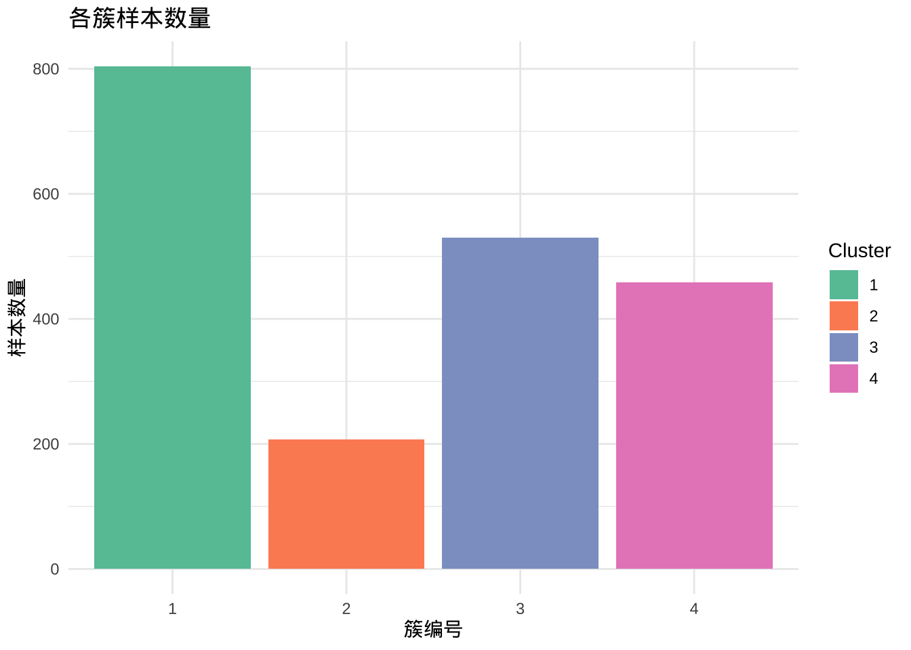
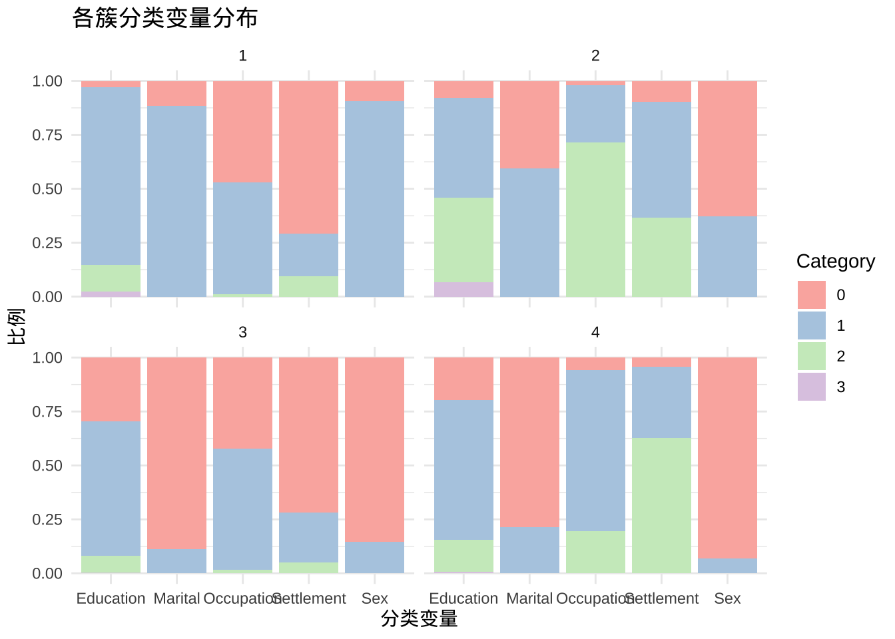

点击下载数据文件: supermarket.xlsx
点击下载数据文件: supermarket.xlsx #install.packages("klaR")
library(klaR)
library(tidyverse)
library(readr)K-modes & K-prototypes R代码
加载必要的包
导入数据并预处理
重命名
将定量变量转成factor
剔除含有缺失值的个案
将tibble转成data.frame
# 读取数据
library(readxl)
supermarket <- read_excel("supermarket.xlsx")
# 数据预处理
supermarket <- supermarket %>%
rename(Marital = `Marital status`, Settlement = `Settlement size`) %>%
mutate(
Age_group = cut(Age, breaks = c(0,20,30,40,50,60,70,80), right = FALSE,
labels = c("[0,20)","[20,30)", "[30,40)", "[40,50)", "[50,60)", "[60,70)", "[70,80)")),
Income_group = cut(Income, breaks = c(0, 50000, 100000, 150000, 200000, 250000, 300000, 350000),
right = FALSE, labels = c("[0,50k)", "[50k,100k)", "[100k,150k)", "[150k,200k)",
"[200k,250k)", "[250k,300k)", "[300k,350k+)"))
) %>%
select(Sex, Marital, Age_group, Education, Income_group, Occupation, Settlement) %>%
mutate(across(.cols = everything(), .fns = as.factor)) %>%
na.omit() %>%
as.data.frame()重新命名因子水平
supermarket$Sex <- factor(supermarket$Sex, levels = c(0, 1), labels = c("Male", "Female"))
supermarket$Marital <- factor(supermarket$Marital, levels = c(0, 1), labels = c("Single", "Non-single"))
supermarket$Education <- factor(supermarket$Education, levels = c(0, 1, 2, 3),
labels = c("Other/Unknown", "High School", "University", "Graduate School"))
supermarket$Occupation <- factor(supermarket$Occupation, levels = c(0, 1, 2),
labels = c("Unemployed/Unskilled", "Skilled Employee/Official",
"Management/Self-employed/Highly Qualified"))
supermarket$Settlement <- factor(supermarket$Settlement, levels = c(0, 1, 2),
labels = c("Small City", "Mid-sized City", "Big City"))使用kmodes函数进行聚类分析
kmodes() 是一种 基于随机初始化簇中心的聚类算法。
每次运行时，初始簇中心是随机选择的，所以可能得到不同的聚类结果。
使用 set.seed(123) 可以固定随机数生成器的状态，保证每次运行结果一致（可重复）。
set.seed(123)
kmodes_result <- kmodes(supermarket, modes = 4, iter.max = 10)
# 保存聚类结果
supermarket$Cluster <- as.factor(kmodes_result$cluster)查看聚类结果
# 查看每个聚类的众数
kmodes_result$modes Sex Marital Age_group Education Income_group
1 Male Single [30,40) High School [50k,100k)
2 Female Non-single [20,30) High School [100k,150k)
3 Female Non-single [50,60) University [150k,200k)
4 Male Single [30,40) High School [100k,150k)
Occupation Settlement
1 Unemployed/Unskilled Small City
2 Skilled Employee/Official Small City
3 Skilled Employee/Official Mid-sized City
4 Skilled Employee/Official Mid-sized City# 查看每个观测值的聚类分配
# kmodes_result$cluster
# 查看每个聚类的大小
kmodes_result$sizecluster
1 2 3 4
434 719 172 675 # 查看每个聚类的分布
table(supermarket$Cluster)
1 2 3 4
434 719 172 675 概括每个类别的特征
cluster_summary <- supermarket %>%
group_by(Cluster) %>%
summarise(
Sex = names(which.max(table(Sex))),
Marital = names(which.max(table(Marital))),
Age_group = names(which.max(table(Age_group))),
Education = names(which.max(table(Education))),
Income_group = names(which.max(table(Income_group))),
Occupation = names(which.max(table(Occupation))),
Settlement = names(which.max(table(Settlement))),
Size = n()
)
# 输出簇特征
cluster_summary# A tibble: 4 × 9
Cluster Sex Marital Age_group Education Income_group Occupation Settlement
<fct> <chr> <chr> <chr> <chr> <chr> <chr> <chr>
1 1 Male Single [30,40) High Sch… [50k,100k) Unemploye… Small City
2 2 Female Non-sin… [20,30) High Sch… [100k,150k) Skilled E… Small City
3 3 Female Non-sin… [50,60) Universi… [150k,200k) Skilled E… Mid-sized…
4 4 Male Single [30,40) High Sch… [100k,150k) Skilled E… Mid-sized…
# ℹ 1 more variable: Size <int>可视化聚类结果
# 可视化：年龄组和收入组的簇分布
ggplot(supermarket, aes(x = Age_group, fill = Cluster)) +
geom_bar(position = "dodge") +
labs(title = "Age Group Distribution by Cluster", x = "Age Group", y = "Count") +
theme_minimal() +
theme(axis.text.x = element_text(angle = 45, hjust = 1))
ggplot(supermarket, aes(x = Income_group, fill = Cluster)) +
geom_bar(position = "dodge") +
labs(title = "Income Group Distribution by Cluster", x = "Income Group", y = "Count") +
theme_minimal() +
theme(axis.text.x = element_text(angle = 45, hjust = 1))
解释聚类结果
簇1：主要为年轻（[20,30)）、单身男性，高中教育，低收入（[0,50k)），失业/无技能，居住在小城市。
簇2：主要为中年（[30,40)）、已婚女性，大学教育，中等收入（[100k,150k)），熟练雇员，居住在中型城市。
簇3：主要为老年（[50,60)）、已婚混合性别，大学/研究生教育，高收入（[150k,200k)），高素质职业，居住在大城市。
簇4：可能为过渡群体，例如中年单身，高中/大学教育，中等收入，混合职业和居住地。
k-prototypes 聚类分析
# 指定图形的中文字体
par(family = 'STKaiti')
#install.packages("showtext")
library(showtext)
showtext_auto()
library(clustMixType)
# 读取数据
supermarket <- read_csv("supermarket.csv")
# 数据预处理
# 读取数据
supermarket <- read_csv("supermarket.csv")
# 数据预处理
supermarket <- supermarket %>%
rename(Marital = `Marital status`, Settlement = `Settlement size`) %>%
select(Sex, Marital, Education, Occupation, Settlement, Income, Age) %>%
mutate(across(c(Sex, Marital, Education, Occupation, Settlement),
as.factor)) %>%
na.omit() %>%
as.data.frame()
# 设置随机种子
set.seed(123)
# 选择混合类型变量
mix_data <- supermarket %>%
select(Age, Income, Sex, Marital, Education, Occupation, Settlement)
# 运行 k-prototypes 聚类，设定 4 个簇
kproto_result <- kproto(mix_data, k = 4, verbose = TRUE)# NAs in variables:
Age Income Sex Marital Education Occupation Settlement
0 0 0 0 0 0 0
0 observation(s) with NAs.
Estimated lambda: 1357318162 # 查看聚类中心
kproto_result$centers Age Income Sex Marital Education Occupation Settlement
1 31.69527 101157.4 1 1 1 1 0
2 43.93720 197277.5 0 1 1 2 1
3 36.19811 104039.5 0 0 1 1 0
4 39.33551 140742.7 0 0 1 1 2# 每个样本的簇标签
head(kproto_result$cluster)1 2 3 4 5 6
4 4 3 4 4 4 # 各簇样本数量
table(kproto_result$cluster)
1 2 3 4
804 207 530 459 # 将簇标签添加到原始数据
supermarket$Cluster <- as.factor(kproto_result$cluster)
# 1️⃣ 数值变量在各簇的均值
num_summary <- supermarket %>%
group_by(Cluster) %>%
summarise(
Mean_Age = mean(Age),
Mean_Income = mean(Income),
.groups = "drop"
)
print(num_summary)# A tibble: 4 × 3
Cluster Mean_Age Mean_Income
<fct> <dbl> <dbl>
1 1 31.7 101157.
2 2 43.9 197277.
3 3 36.2 104039.
4 4 39.3 140743.# 2️⃣ 分类变量在各簇的分布
cat_vars <- c("Sex","Marital","Education","Occupation","Settlement")
cat_summary <- supermarket %>%
group_by(Cluster) %>%
summarise(across(all_of(cat_vars), ~paste(names(sort(table(.), decreasing = TRUE))[1])),
.groups = "drop")
print(cat_summary)# A tibble: 4 × 6
Cluster Sex Marital Education Occupation Settlement
<fct> <chr> <chr> <chr> <chr> <chr>
1 1 1 1 1 1 0
2 2 0 1 1 2 1
3 3 0 0 1 1 0
4 4 0 0 1 1 2 # 3️⃣ 可视化各簇样本数量
cluster_count <- supermarket %>%
count(Cluster)
ggplot(cluster_count, aes(x = Cluster, y = n, fill = Cluster)) +
geom_bar(stat = "identity") +
labs(title = "各簇样本数量", x = "簇编号", y = "样本数量") +
theme_minimal() +
scale_fill_brewer(palette = "Set2")
# 4️⃣ 可视化分类变量在各簇的分布（气泡图示例）
# 将分类变量展开
supermarket_long <- supermarket %>%
pivot_longer(cols = all_of(cat_vars), names_to = "Variable", values_to = "Category")
ggplot(supermarket_long, aes(x = Variable, fill = Category)) +
geom_bar(position = "fill") +
facet_wrap(~Cluster) +
labs(title = "各簇分类变量分布", y = "比例", x = "分类变量") +
theme_minimal() +
scale_fill_brewer(palette = "Pastel1")